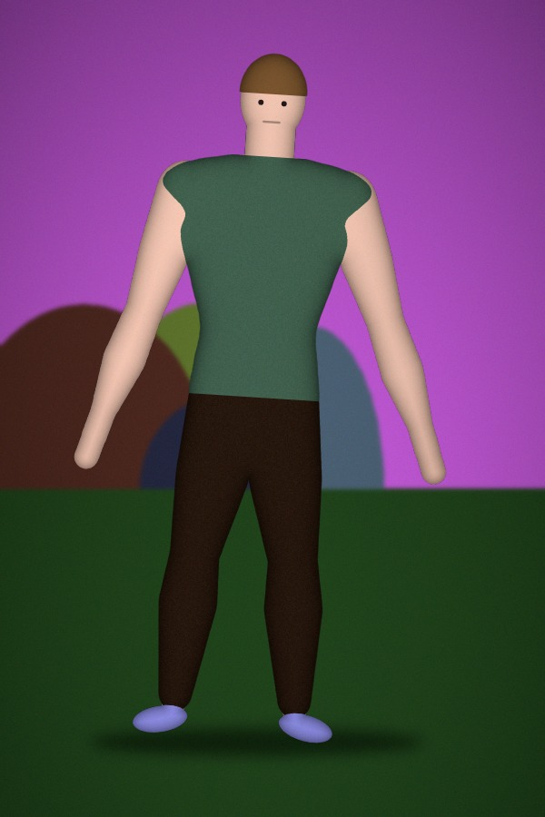
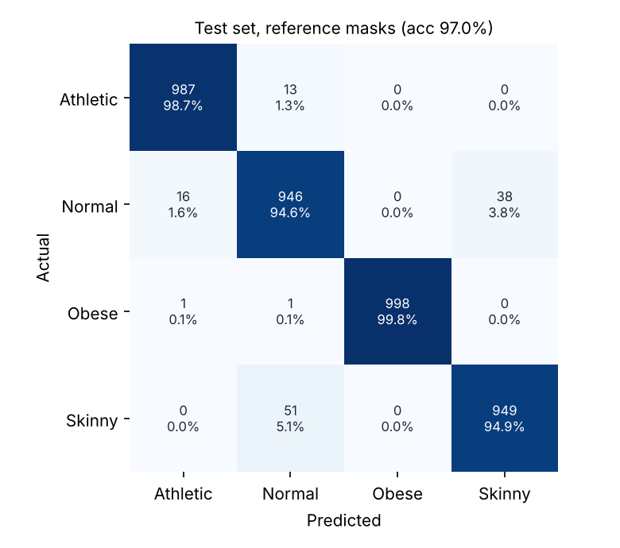
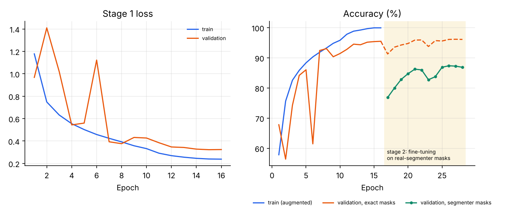

Read a body's shape from a single photo.
PhyVision finds the person in a full-body photo, turns them into a clean silhouette, measures their proportions and classifies the physique as Athletic, Normal, Obese or Skinny. Then it gives you a fitness guide written for that body type.

System status
This page is the control center for every part of the project: the server, the trained model, the dataset, the notebook and the source files.
pip install -r requirements.txt
python app.pyHow a photo becomes a result
PhyVision reads body shape, not faces, skin tone or clothing colour. Each upload goes through the same five stages.
Find the person
The background is removed with rembg's human segmentation model, or with OpenCV GrabCut when working offline. Transparent PNG cut-outs are used as they are.
Clean the silhouette
Stray blobs are dropped, holes are filled, and the body is cropped and scaled to a standard 128 × 128 frame.
Measure proportions
The width of the body is measured at 48 heights, from head to feet, giving shoulder, waist and hip ratios.
Classify with PhyNet
A ResNet-18 reads the silhouette while a second network reads the measurements. It was fine-tuned on real segmenter output, so imperfect cut-outs are expected.
Guide the next step
You get a training week, key exercises, nutrition advice and safety notes matched to the predicted physique.
Taking the photo
The model reads the outline of the body, so the photo matters as much as the model. Use a portrait photo (about 2:3 or 3:4) of one person standing straight and facing the camera, head to feet in frame and filling 75-95% of the height, arms slightly away from the body, in fitted clothes against a plain background.
Photos cropped at the knees or mid-thigh are supported, and the app tells you which framing it detected. Every result includes a photo check against these rules.
Model performance
Measured on the held-out test split, which the model never saw during training or model selection.
Per-class results (test set)
Confusion matrix

Accuracy by photo framing
How much of the body is in the photo. End-to-end columns cut the person out of the raw test photo from scratch.
Training curves

Full photo pipeline
Here the person is cut out of the raw test photo from scratch, exactly as an upload would be, instead of using the reference mask. These are the honest end-to-end numbers.
Dataset
The PhyVision dataset is AI-generated: every person is rendered by src/phyvision/synth.py from body measurements drawn per class, with randomised sex, skin tone, hair, clothing, looseness of fit, arm pose, background, lighting, camera tilt and sensor noise. Each image comes with an exact label and a pixel-perfect mask. Train, validation and test people are created from separate random seeds, so no person appears in more than one split.
Project files
Everything in the repository and what it does. Links open the file when the server is running, or from disk when browsing offline.
How to run PhyVision
You need Python 3.10 or newer.
# 1. install
pip install -r requirements.txt
# 2. start the web app (opens your browser)
python app.py
# optional: classify from the command line
python scripts/predict.py web/demo/john_bahadur.jpgThe trained model and the full dataset ship with the repository, so nothing needs to be trained before you start. To rebuild everything from scratch (the README lists every option):
python scripts/generate_dataset.py # 16,000 images
python scripts/train.py # stage 1: shape
python scripts/build_segmenter_masks.py --method rembg --split train
python scripts/finetune.py # stage 2: real segmenters
python scripts/evaluate.py # writes reports/
python scripts/build_hash_db.py # integrity check
python scripts/make_demos.py # demo people
python scripts/build_static.py # offline dataGood photos, good results
- One person, standing upright, facing the camera, arms slightly away from the body.
- The whole body in frame, head to feet.
- Fitted clothing. Baggy clothes hide your real shape.
- A plain background helps, especially offline.
- The first analysis downloads rembg's segmentation model (about 170 MB) once. Without it, PhyVision uses GrabCut.